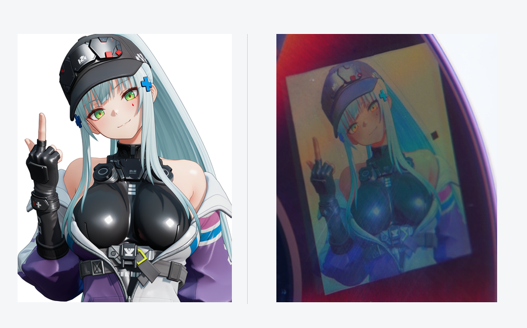
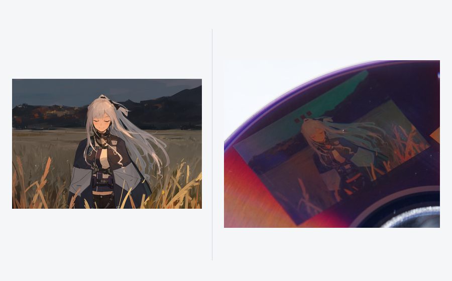
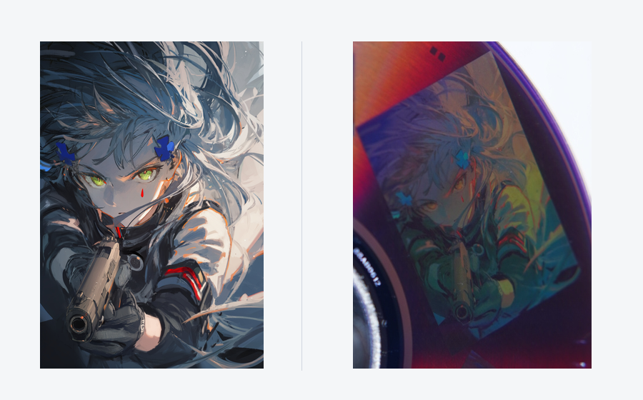
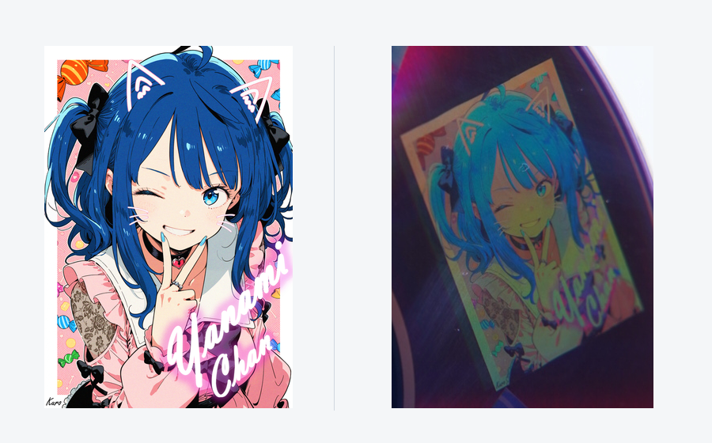

Disc Color Studio
在普通 DVD-R 数据面上刻录彩色图案的 Windows 工具。基于 DiscImageStudio（DIS） 的 DVD 编码与刻录组件，增加实测角度色表、彩色映射、纹理混合和图层编辑。
实盘演示
四幅插画的原图与实盘局部对照。
|
 |
 |
|
 |
 |


实盘局部仅裁剪、旋转方向和缩放，未调整颜色、曝光或锐度，并确认视觉效果和图片一致。四组照片呈现了不同色域下的色彩表现。
照片展示较合适角度下的效果；可以看到，图片颜色仅在很窄的范围内可以在碟片上还原，稍微偏离颜色较准的角度就会偏色。所以不要对这个项目抱太大期望，通常你需要花几分钟摆弄光盘来找到最佳观测角度。（个人经验：盘摆在桌子上，正对盘做好。拿个白光单led手电，光束垂直桌面，指向光盘中心圆孔，然后缓慢竖直上移，观察右侧的图案，在某个高度色彩就会复原）
演示中的第三方插画见下方作者、原作链接与权利声明。
展开 4 张完整实盘照片


原理
DVD-R 的记录层包含可被刻录激光改变的染料，下面配有反射层。刻录时，激光沿预制的螺旋轨道形成一连串光学性质不同的记录标记。标记的长度、间隔和排列既承载数据，也参与决定这个区域如何反射和衍射光线。
DIS 使用校准后的光盘几何模型，将图像位置映射到螺旋轨道上的数据位置，并通过补偿扇区扰码，将选定的数据纹理送入后续编码。DVD 的 EFMPlus 调制把字节转换为通道码，再由刻录机写成相应的标记与间隔。本项目在这条流程中选择不同的重复字节序列，生成具有不同排列特征的记录结构；纠错码与同步信息也共同构成最终写入的图样。
白光从相邻微结构返回时，光程差会使同一波长的光发生相长或相消干涉；不同波长满足增强条件的方向各不相同，因此盘片会出现随方向变化的彩色。微结构的排列还会影响各个波长在不同方向上的衍射效率，也就是有多少光进入观察者眼中。
通过选择不同的记录纹理，改变各波段光进入同一观察方向的相对强度，就能在入射方向和观察方向固定时得到不同颜色。
在固定照明下，这个过程可用有效光谱响应模型描述：
It(λ) = Ht(λ; θi, θo, φ)
其中，Ht 是包含固定照明影响的纹理 t 在指定入射方向 θi、观察方向 θo 和局部轨道方位 φ 下的有效光谱响应，It 是进入观察方向的光谱。人眼或相机对这个光谱的不同波段作加权响应，形成所见颜色。同一纹理随盘片转动而变色，是因为它相对光源和观察方向的方位改变，进而改变了 Ht。盘面不同位置的轨道方向也不同，因此颜色映射需要同时考虑纹理和位置。
在实际操作中，构建了一个特定角度下的经验色表：记录“纹理编号 + 相对角度 → 拍到的颜色”，再根据图片目标颜色和盘面位置，选择该角度下合适的纹理。一个目标颜色可以由多种纹理按比例混合：软件把它们分配到相邻轨道上的细密区域，人眼或相机在观察尺度上对这些区域的光进行平均。程序在线性 RGB 空间中用加权和估算混色：
Cmix(φ) ≈ Σj wj Cj(φ), wj ≥ 0, Σj wj = 1
Cj(φ) 是该角度下第 j 种纹理的实测线性 RGB，wj 是分配给它的比例。调节这些比例可以补充单一纹理之间的中间色与明暗层次；让相邻角度的配方连续过渡，可以减轻纹理切换形成的条带。深色和轮廓可结合 DIS 灰阶纹理处理。各纹理的实测颜色及其可实现的混色共同构成该角度的可用色域，软件在这个范围内逼近图片的目标颜色。
搜索盘实拍，仅供演示。 图中的密集色块用于搜索纹理和颜色。此搜索盘的生成工具、工程、ISO 及原始校准照片集不包含在仓库或发行包中。软件运行所需的处理后数值色表仍随程序提供。
我们在完成 DIS 几何校准的盘片上，刻录大量带编号的候选纹理；固定灯光和相机，逐步旋转盘片拍摄，再通过网格配准、取色和人工核对，建立“纹理、相对角度与颜色”的对应关系。比较各角度的白色候选和可用色域后，选取颜色较丰富的连续约 60° 区间，作为软件配色与纹理混合的依据。
我知道这个方法有些蠢。我也尝试构建模型来构建纹理到颜色的映射，但是始终准确率停留在40%上下，所以暂时不采用。也许之后模型准确率上来了，我会更新这个软件替换掉经验色表。
测试盘片与结果分享
实盘演示与内置色表使用的是美国版威宝（Verbatim）95058 DVD-R，标称 16×，实际以 4× 刻录。
其他品牌、型号的盘片尚未测试。从原理上看，这种纹理显色与实测配色方法也应能用于其他兼容 DIS 的 DVD-R。
欢迎测试过其他盘片的朋友通过 Issue 分享结果，包括盘片品牌和型号、光驱及刻录速度、光照条件，以及实拍照片或转动视频。
演示插画来源与声明
实盘照片和视频使用了以下作品作为图案，感谢各位创作者。页码从第 1 张开始计算。
| 作品 | 作者／发布者 | 演示使用的图片 |
|---|---|---|
| GF2 Klukai | gcmsfromisland | 第 2 张（p1） |
| AK-12 | BatonKhleba | 第 1 张（p0） |
| HK416 | momostima | 唯一一张（p0） |
| 八奈見杏菜『地雷系美少女 八奈见酱』 | 黑木kuro | 第 1 张（p0） |
以上插画用于展示 DVD-R 刻录与实盘显色效果，相关插画及角色权利归各自权利人。
权利人联系与移除： 如权利人认为演示照片、视频或其他展示涉及侵权，请通过 项目 Issue 联系，注明原作链接和涉及的展示位置。我们会及时核实并移除相关素材。
Vibe coding
本项目完全由 AI 完成。